БОЛОВСРОЛ, ШИНЖЛЭХ УХААНЫ ЯАМ
[ СУРГУУЛИЙН НЭР : ШУТИС / МУИС / ИХ ЗАСАГ / ИЗОУС ]
МЭДЭЭЛЭЛ ТЕХНОЛОГИЙН ТЭНХИМ / САЛБАР СУРГУУЛЬ
Сэдэв: Цахим спортын платформын (BTT.mn) хэрэглэгчийн интерфэйс (UI/UX) аудит, өрсөлдөгчдийн харьцуулсан судалгаа (Xplay.gg, Leet.mn, Mirage.mn), сургалтын систем (flask.lab) ба дадлагын нэгдсэн портал (Дадлага.mn) хөгжүүлэлт
| Гүйцэтгэсэн оюутан: | ............................................. / Нэр, Код / |
| Мэргэжил: | Программ хангамж / Мэдээллийн технологи |
| Курс: | 3-р курс / 4-р курс |
| Дадлага удирдсан багш: | ............................................. / Цол, Зэрэг, Нэр / |
| Байгууллагын удирдагч: | ............................................. / Албан тушаал, Нэр / |
| Дадлага хийсэн газар: | ............................................. / Компанийн нэр / |
| Хугацаа: | 2026.09.15 – 2026.10.30 (45 хоног) |
УЛААНБААТАР ХОТ - 2026 ОН
Орчин үеийн цахим спорт (Esports) болон коммьюнити платформууд нь сая сая тоглогчдыг өөртөө татахын тулд зөвхөн тоглоомын сервер ажиллуулаад зогсохгүй, хэрэглэгчийн туршлага (UX), хувийн тохиргоо (Customization), аналитик дата дүрслэл болон интерактив вэб интерфейсийн шийдлүүдийг цогцоор нь хөгжүүлж байна. Тоглогч вэб дээрээс дуртай зэвсгийн өнгө үзэмж (Skin)-ээ тохируулах, өөрийн чансаа (Elo), оноолтын статистикийг хянах, тусгай газрын зураг (Workshop maps)-т холбогдох үйлдлүүд нь маш хялбар, ойлгомжтой, саадгүй (Seamless) байх шаардлагатай.
Энэхүү 45 хоногийн үйлдвэрлэлийн дадлагын хүрээнд Монголын цахим спортын тэргүүлэгч платформуудын нэг болох BTT.mn-ийн хэрэглэгчийн интерфейс (UI) болон ажиллагаанд гүнзгийрүүлсэн аудит хийж, олон улсын жишиг Xplay.gg, дотоодын Leet.mn болон Mirage.mn системүүдтэй харьцуулсан бенчмарк (Benchmarking) судалгааг хийж гүйцэтгэлээ.
Мөн түүнчлэн сургалтын үйл ажиллагааг цахимжуулах flask.lab (Python Flask, Jinja2, SQLite/PostgreSQL) системийн элсэлт, админ удирдлагын хөгжүүлэлт болон их дээд сургуулийн оюутнуудад зориулсан Дадлага.mn (Node.js, Express, ATS Dashboard) нэгдсэн платформыг бие даан төлөвлөж, бүрэн кодчилон ашиглалтад оруулав.
Дадлагыг программ хангамж, веб систем, өндөр ачаалалтай серверийн дэд бүтэц болон дижитал энтертайнмент чиглэлээр үйл ажиллагаа явуулдаг байгууллагын Системийн хөгжүүлэлтийн албанд 45 хоногийн турш гүйцэтгэв.
Төслүүдийг гүйцэтгэхдээ Python 3.10+, Flask microframework, SQLite, PostgreSQL (UnifiedCursor архитектур), Node.js, Express REST API, HTML5/CSS3 (CSS Variables, Glassmorphism), JavaScript ES6+ болон Figma орчныг ашигласан.
| Хугацаа | Төлөвлөсөн ажлууд | Гүйцэтгэлийн бодит үр дүн | Биелэлт |
|---|---|---|---|
| 1-р 7 хоног | • BTT.mn платформын анхдагч аудит хийх | BTT.mn-ийн UI болон Skinchanger дутагдлыг илрүүлэв. | 100% |
| 2-р 7 хоног | • Өрсөлдөгчдийн судалгаа (Xplay.gg, Leet.mn, Mirage.mn) | Skinchanger, Workshop холболт, статистикийг баримтжуулав. | 100% |
| 3-р 7 хоног | • In-game Live Sync ба монетизацийн санал | 15 бодит зургийн шинжилгээ, түрээсийн бизнес загвар гаргав. | 100% |
| 4-р 7 хоног | • flask.lab боловсролын систем хөгжүүлэлт | Jinja2 темплэйт, файл ачаалалт, CSV тайлангийн экспорт ажиллав. | 100% |
| 5-р 7 хоног | • "Дадлага.mn" платформын фронтенд кодчилол | Цэвэр CSS дизайн систем, шүүлтүүрийн системийг кодчилов. | 100% |
| 6-р 7 хоног | • Зар нийтлэх Live Preview ба ATS самбар | Ажил олгогчийн хянах самбар, анкет илгээх логик бэлэн болов. | 100% |
| 7-р 7 хоног | • Системийн тест, тайлан нэгтгэл | Тайланг эрдэм шинжилгээний найруулгаар нэгтгэж дуусгав. | 100% |
Тоглогчдын платформыг сонгох хамгийн том сэдэл нь тоглоом доторх зэвсгийн өнгө үзэмжийг өөрийн хүссэнээр өөрчлөх "Skinchanger" модуль байдаг. BTT.mn-ийн одоогийн интерфейс нь бусад системүүдтэй харьцуулахад харагдах байдлын хувьд харьцангуй энгийн боловч хэрэглэгч хүссэн скинийхээ загвар, өнгө, чанарыг (Wear, Pattern, StatTrak) олоход алхмын тоо ихтэй, шүүлтүүр нь арай төвөгтэй санагдаж байна.
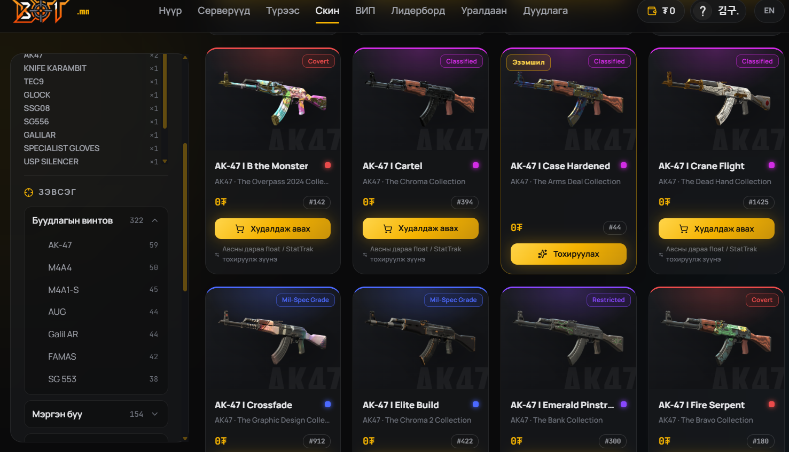
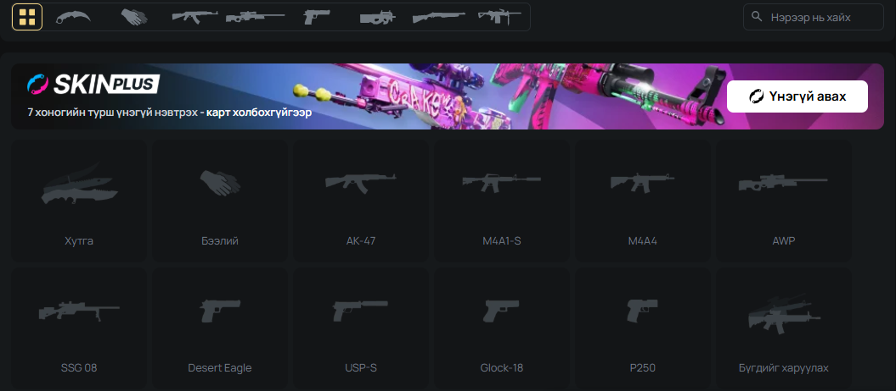
Олон улсын тэргүүлэгч Xplay.gg платформын хувьд Skinchanger хэсэг нь маш цэвэрхэн харааны шатлалтай (Visual Hierarchy). Хэрэглэгч нэг товшилтоор буу, хутга, бээлийний ангиллыг сонгож, шууд хайлт хийхэд хэдхэн миллисекундын дотор 3D загвартайгаа гарч ирдэг тул хүссэн скинээ олоход туйлын хялбар байна.
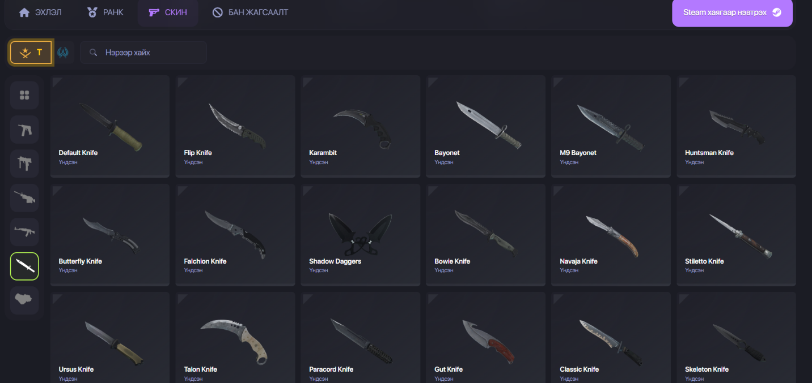
Дотоодын зах зээл дээрх Leet.mn платформын хувьд мөн адил тоглогч өөрийн хүссэн скинээ хайж олоход интерфейс нь маш ойлгомжтой, зэвсгийн дүрсүүд нь том, тодорхой хэмжээтэй хийгдсэн тул хэрэглэгчийн ашиглах хугацаа (Time-to-Task)-г мэдэгдэхүйц хэмнэдэг давуу талтай.
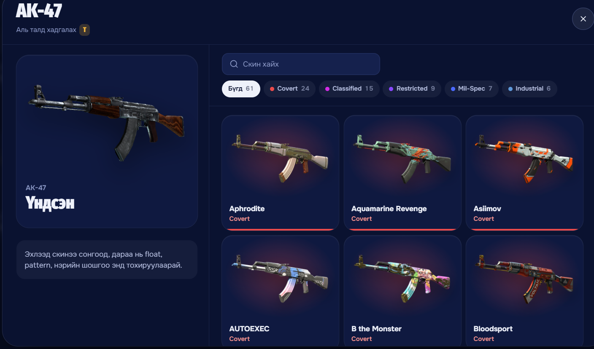
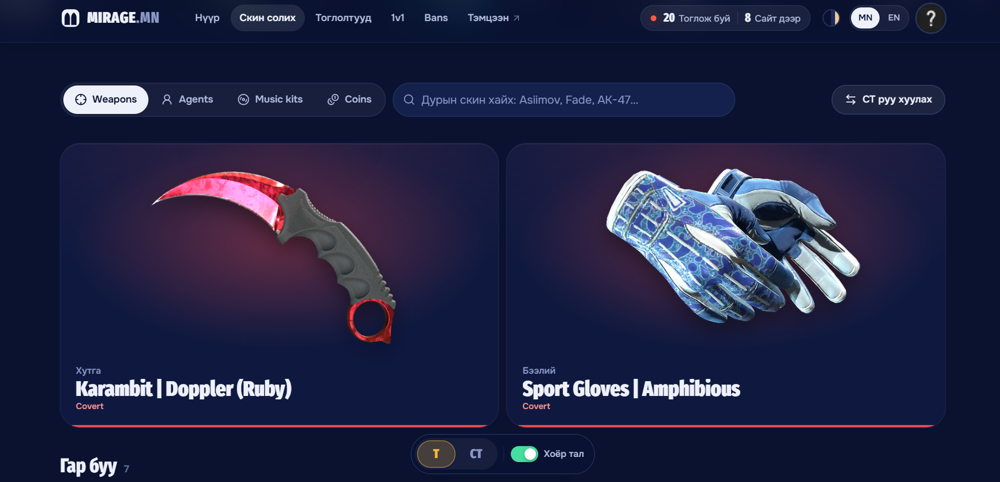
Тоглогчид зөвхөн 5v5 Competitive тоглохоос гадна өдөр бүр ур чадвараа хөгжүүлэх (Aim training), буудлага болон хөдөлгөөний чадвар (Movement: KZ, Surf, Bunnyhop), 1v1 дуэлийн сорилтуудыг тогтмол эрэлхийлж байдаг. Steam Workshop-ийн шилдэг газрын зургуудтай шууд холбогдож, вэб дээрээс 1 товшилтоор серверт орох боломж олгох нь BTT.mn платформын тоглогчдыг өдөр бүр татах гол хүчин зүйл болно.
Бусад тэргүүлэгч платформууд тоглогчдын зөвхөн Чансаа (Elo)-г харуулаад зогсохгүй, туйлын нарийвчилсан статистик үзүүлэлтүүдийг график болон визуал картуудаар илэрхийлж байна: Winrate %, Headshot %, зэвсэг бүрийн задаргаа, тоглосон цагийн хуваарилалт.
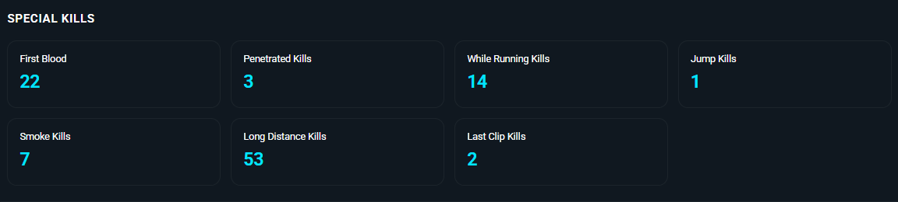
BTT.mn-ийг өрсөлдөгчдөөсөө эрс ялгарах, тоглогчдын сонирхлыг татах хамгийн том боломж бол Шинэлэг, онцгой дүрүүд (Custom Agents: Anime, Game characters) болон тоглоомын дуу, дүрсний визуал эффектүүдийг (Kill Effect, Hit Effect, Hit Sound, Bullet Tracer) нэвтрүүлэх явдал юм.
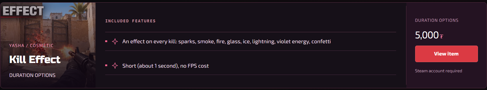
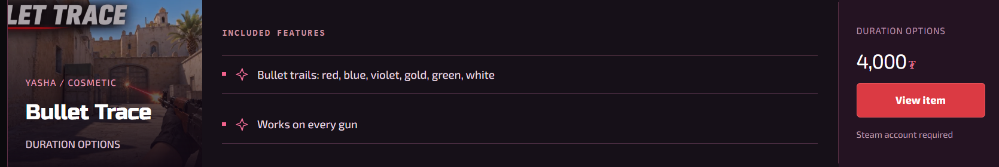
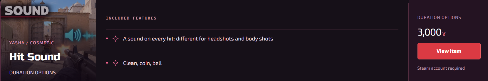
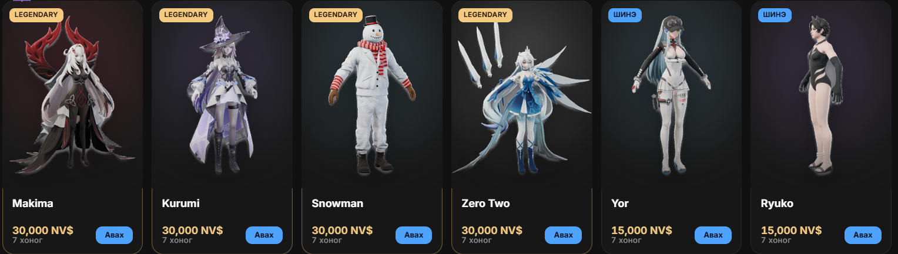
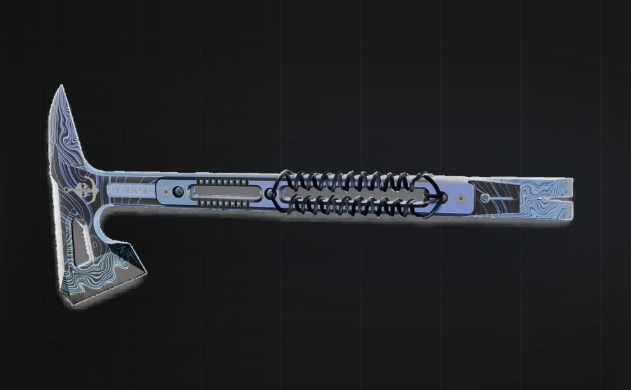
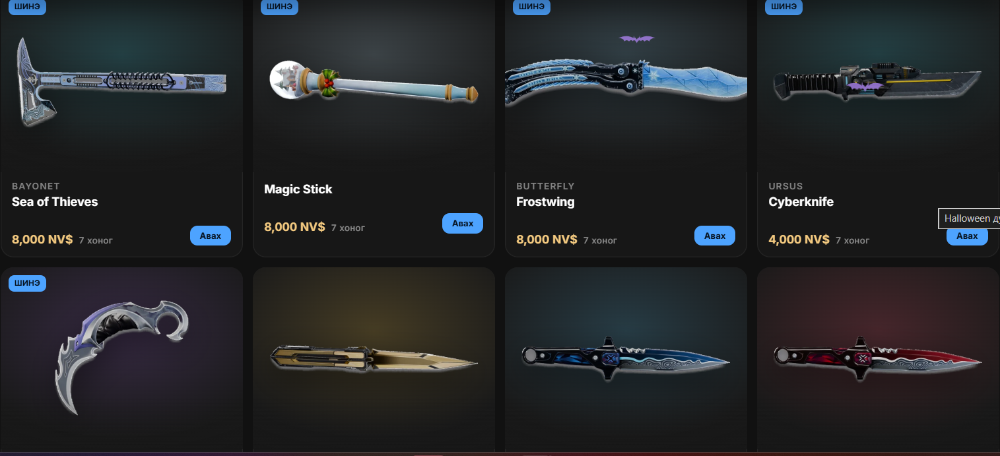
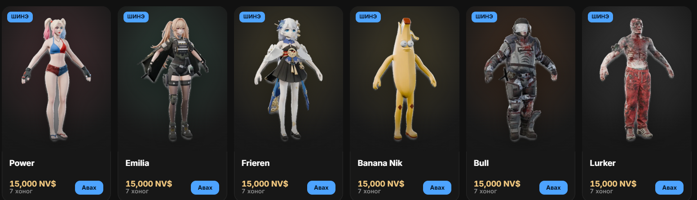
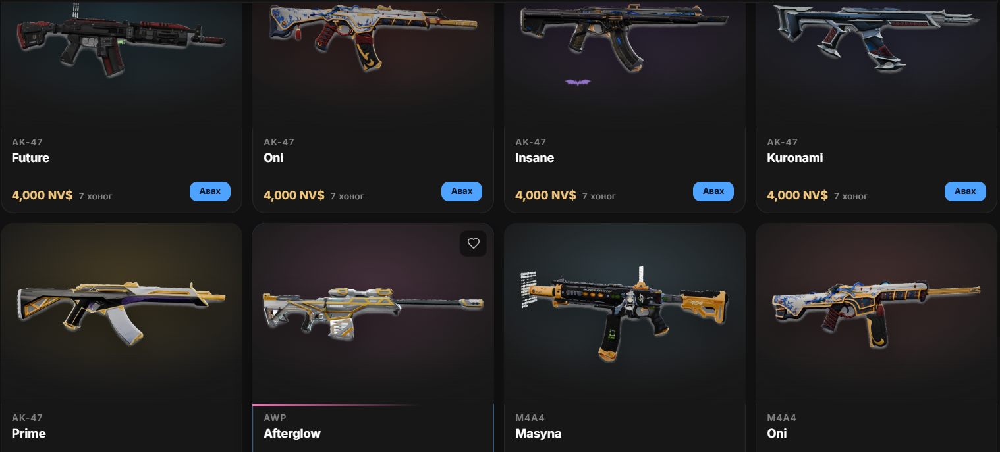
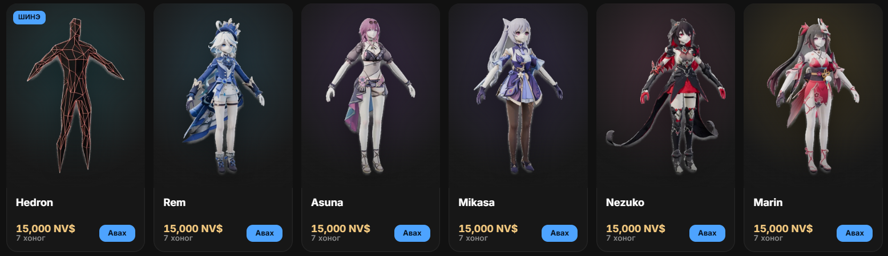
Дадлагын хүрээнд хэрэгжүүлсэн flask.lab төсөл нь сургуулийн элсэлт, удирдлага, багш нарын лавлах, оюутны бүртгэлийг цахимжуулсан 1,600 гаруй мөр Python эх код бүхий хүчирхэг систем юм. UnifiedCursor классыг хөгжүүлж, SQLite болон PostgreSQL хоёр өөр өгөгдлийн баазыг нэг кодоор удирдах архитектурыг амжилттай хэрэгжүүлэв.
Оюутнуудыг ажлын байр, байгууллагын дадлагын хөтөлбөрүүдтэй холбох зорилгоор орчин үеийн Дадлага.mn платформыг бүтээв. Node.js + Express REST API сервер, Live Preview зарын маягт, шүүлтүүртэй зарын сан, компаниудад зориулсан ATS анкет шалгах самбарыг бүрэн хөгжүүлж дууслаа.
45 хоногийн үйлдвэрлэлийн дадлагын үр дүнд BTT.mn платформын өрсөлдөх чадварыг дээшлүүлэх UI/UX болон функциональ цогц зөвлөмжүүд боловсруулагдсанаас гадна, боловсролын систем flask.lab болон оюутны ажлын байрны нэгдсэн систем Дадлага.mn платформууд бүрэн ажиллагаанд орж, их сургуулийн дээд шалгуурыг хангах дадлагын тайлан бэлэн боллоо.